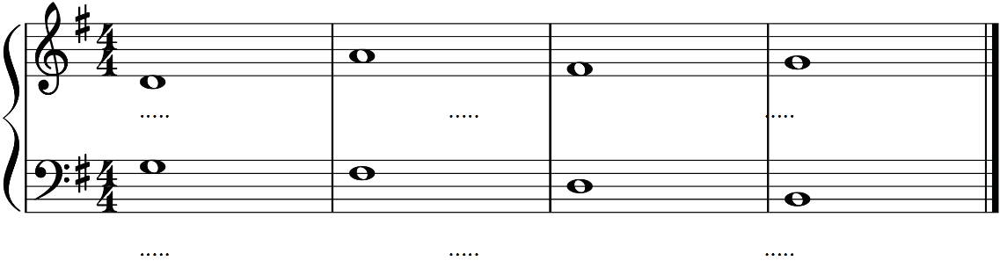
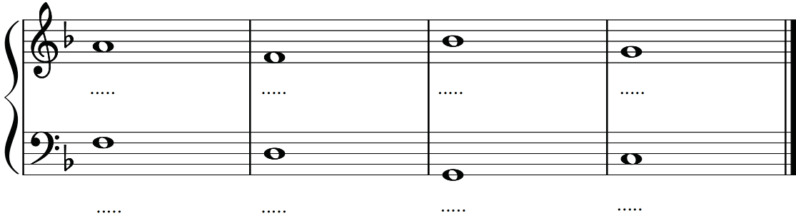
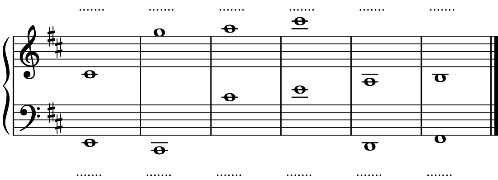

Scales and key signatures
In music, scales and key signatures are closely related since a key signature shows which notes in a scale are sharp or flat. Each scale belongs to a certain key, and the key signature tells musicians which notes to play throughout a song. For example, the G major scale has the notes G, A, B, C, D, E and F♯. Therefore, its key signature has one sharp on note F (F♯). This connection helps musicians to easily know which notes to play, hence making reading music easier.
Degrees of a scale
Scale degree is the position of a particular note on a scale in relation to the tonic note. A major scale has eight notes whereby the eighth note is a repetition of the first note (tonic) in a higher pitch. Each of these eight notes has a degree at a particular scale. Note that, to refer to a scale degree, an up-arrow symbol (^), called “caret” is normally placed before the numbers which indicate the note’s position in the scale. Table 2.1 shows notes for the C major scale and their degrees.